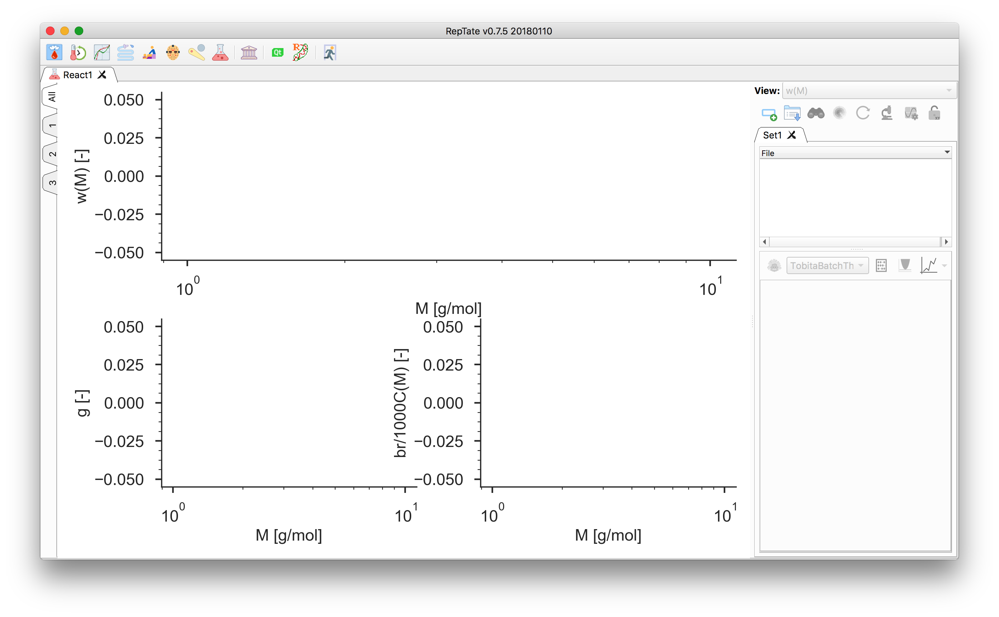
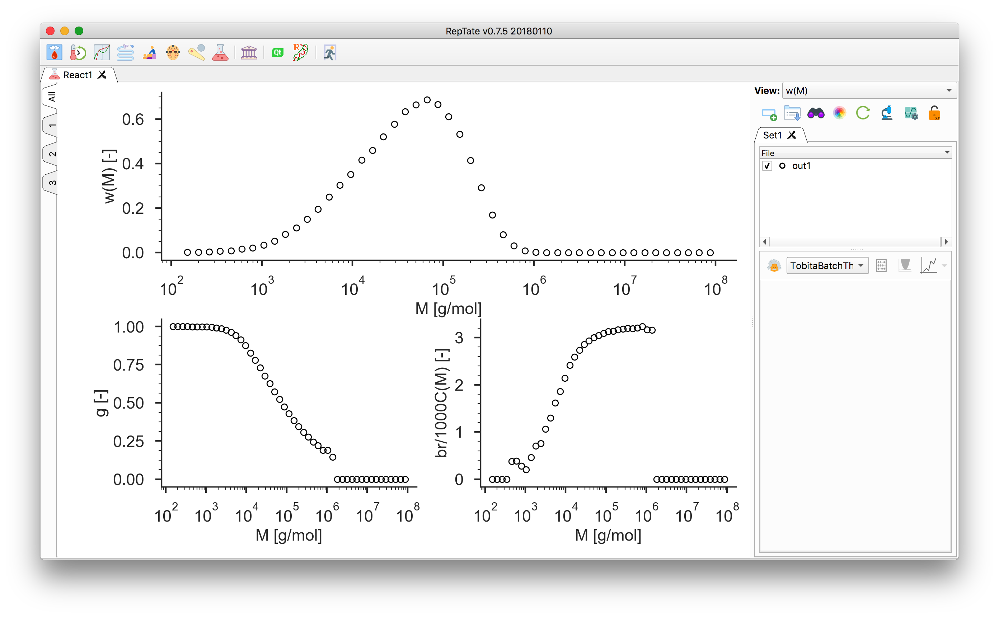
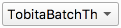

React Tutorial: Graphical User Interface¶
The React module
The React module allows the viewing of experimental gpc-light scattering data. It also provides theories for the modelling of such data. At present, all the theories in the module are based on the use of Monte Carlo reaction simulations, which produce a representative set of molecules and which are then statistically analysed to produce molecular weight distributions. These simulations can then be mixed together, in a “Mixture” theory, to produce new distributions. The molecules, once generated, can be saved into a polymer configuration file suitable for rheology prediction using the “BoB” software.
The React module provides a number of different ways of plotting the data, and also the possibility of viewing several graphs at once. To change the view of a particular graph, click on the relevant tab on the side of the graphs panel. Then change its view. Now, clicking the “All” tab should return to the three-graphs display with the view of the relevant graph changed.
Start RepTate and create a new React Application
 :
:Drag and drop a file with a
.reacextension, e.g.out1.reacin thedata/React/folder. See React: General description for more information on the expected data file format.The 4 columns of the file should contain (1) the molecular mass \(M\), (2) the relative molecular weight \(w(\log(M))\), (3) the \(g\)-factor, and (4) the number of branching per 1000 carbon. The \(g\)-factor is defined as
\[g = \dfrac{\langle R^2_g \rangle_\text{branched}}{\langle R^2_g \rangle_\text{linear}},\]where \(\langle R^2_g \rangle_\text{linear}\) is the radius of gyration squared of a linear molecule of the same chemistry and molecular weight as a given branched molecule.
Select a theory, e.g. the “Tobita Batch” theory , and press
 to create it.
to create it.Note that automatic “minimisation” is disabled for all theories in the React application because they are based on Monte Carlo simulations. Hence, minimisation seems a risky and time-consuming business.

To adjust the BoB binning settings, click the
 button.
button.To save the polymer configuration for BoB, click the
 button.
button.
{kind=link}
{kind=link}
{kind=link}
{kind=link}